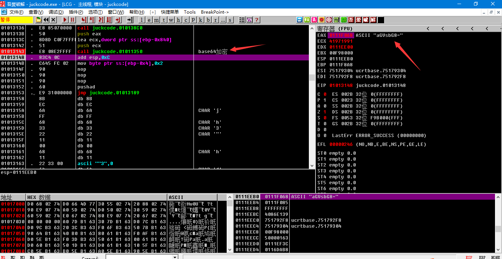
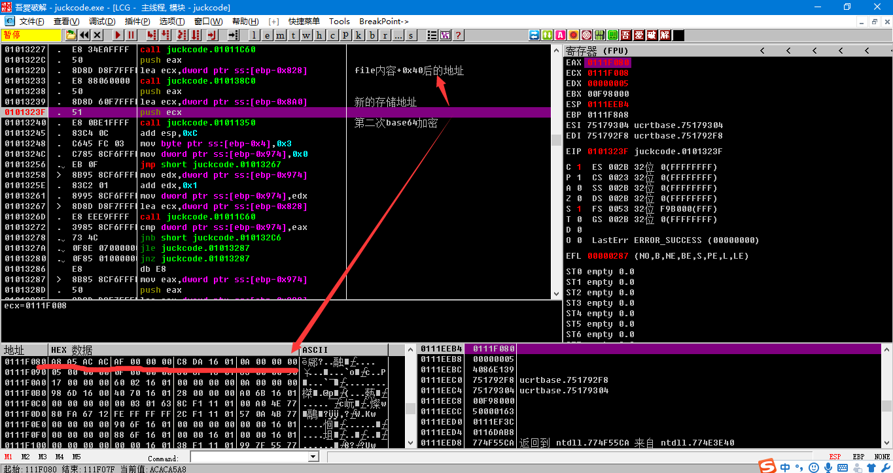
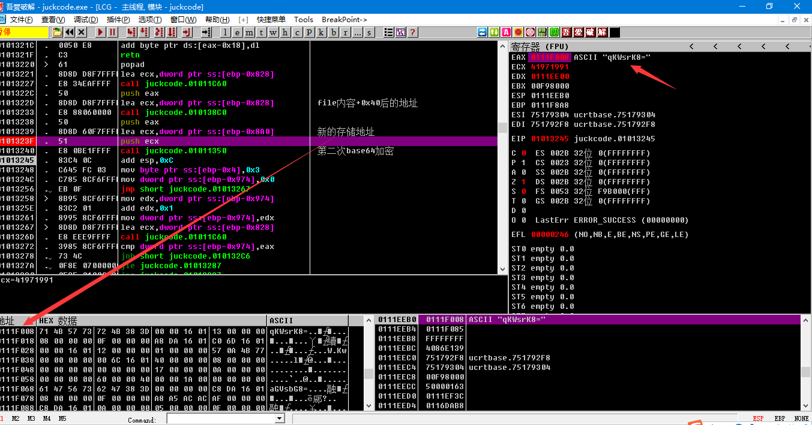
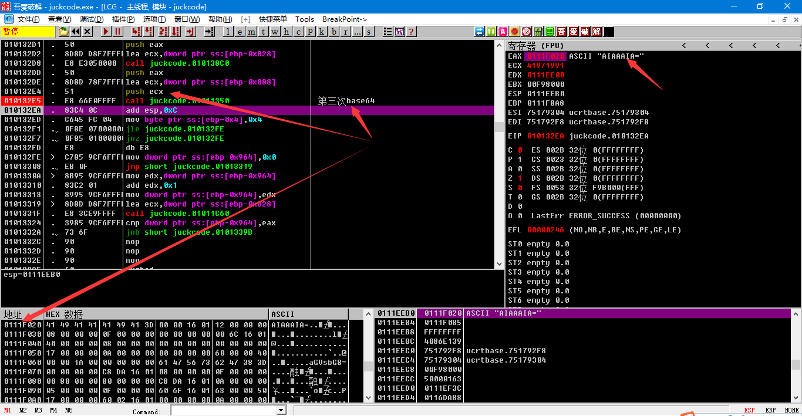
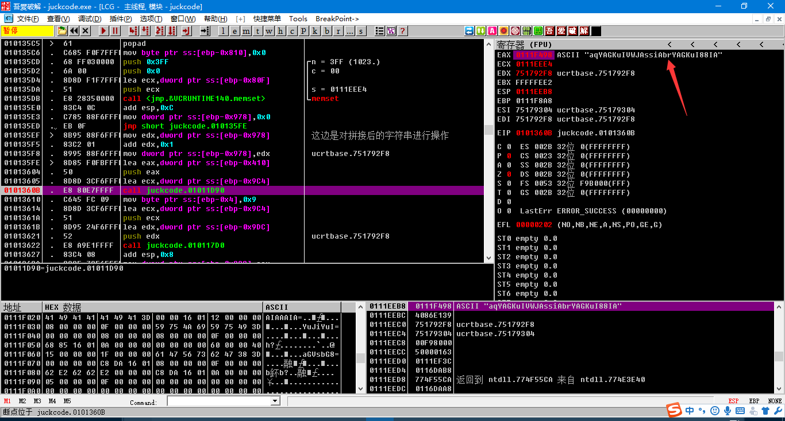
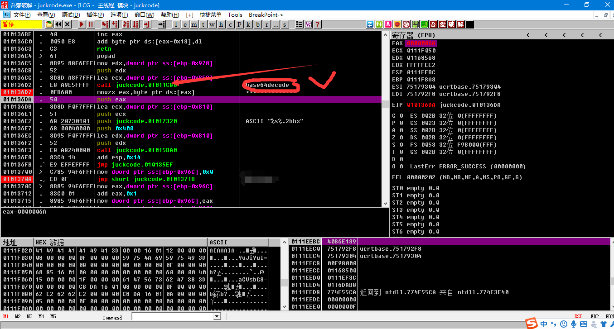
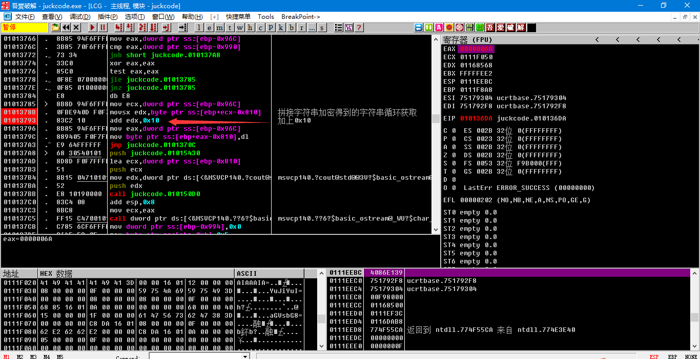
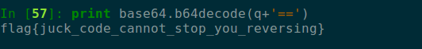

这道juckcode当时没有做出来，一开始是用ida打开的，然后发现关键函数无法反编译(后来知道是加了花)，后来扔到od里面一步一步也也没有还原出主要逻辑，哎我还是太菜了。之后看了王子昂dalao和画眉师傅写的wp终于成功复现了一波。这道题原理应该是这样的，这个juckcode是一个勒索病毒程序，能把文件加密成.enc(加密英文的简写)格式的文件，我们要做的就是分析出勒索软件的加密逻辑然后还原出原来文件中的内容。
我们是首先自己构造一个flag原文件，里面的字符一定不要多，因为这样的话我们在调试程序的时候就可以知道哪里是程序对我们构造的文件进行
操作，不能太多的话是因为字符一多逻辑也就越多，也就越难以分析，所以这里的flag文件中我放的是’hello’这个字符串。将程序扔到od中，首先查找字符串(2333dalao勿喷),发现有./flag,双击找到指令所在地，f8一步步跟下去，然后在01013143这个位置我们突然发现栈上出现了”aGVsbG8=”这个类似base64编码

在python中用base64 decode解了一下发现果然是base64,然后我们就知道了call 01011350这个函数原来是将flag文件中字符串储存的位置以及ss:[ebp-0x840]这个地址作为参数，将“hello” base64后储存在ebp-0x840为开头的内存空间。

然后我们继续f8往下走发现程序进行了3次类似的操作:
1.对hello的每一个字符进行add 0x40操作，base64后储存在一块新的空间，内容为qKWsrK8=

2.对1中+0x40以后的数据依次<<0x7，base64后存储在一块新的空间，内容为AIAAAIA=

3.对2中<<0x7以后的数据进行sub 0x9e，base64后存储在一块新的空间，内容为YuJiYuI=
以上操作结束后继续f8跟进发现程序依次循环取四个base64后的字符串的字符拼接成了一个新的字符串’aqYAGKuIVWJAssiAbrYAGKuI88IA’，

之后通过给’aqYAGKuIVWJAssiAbrYAGKuI88IA’所在的地址下内存访问断点找到了对拼接字符串的操作，但是始终分析不出来进行了什么操作，后来看了两位dalao的wp才知道是对这个字符串进行base64的解码操作。不知道dalao是怎么看出来的，对hello的base64 encode能猜出来，这边的解码就不好猜了，不过这边有个循环计数器的值是0x15，’aqYAGKuIVWJAssiAbrYAGKuI88IA’解码后发现长度刚好也是0x15，要靠猜的话这脑洞也太大了，dalao们肯定不是猜的，回去了解下base64汇编表示。

解码后继续f8发现有对decode后的字符依次进行add 0x10操作，这是最后一步，得到的结果就是flag.enc的内容。

知道了加密算法解密就很容易了。再次描述一下加密算法:1.对flag原文件中的内容base64 2.对原文件的字符依次add 0x40后（存储）再次base64 3.对2中存储后的内容依次shl 0x7后(存储)再次进行base64 4.对3中shl 0x7后的数据 sub 0x9e后（存储）再次base64
一共进行了四次base64，然后将每次得到的base64后的结果组成一个新的字符串(每个字符串依次取一个)，之后对新拼接成的字符串进行解码操作，解完码后每个字符依次+0x10后输出。
解密脚本如下:
1 | import base64 |

哎我还是太菜了，待会去研究一下base64的汇编下的加解密。什么时候看汇编能跟看c语言一样就好了~